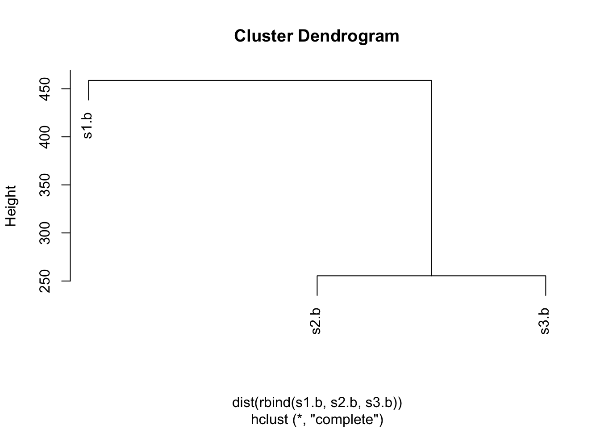
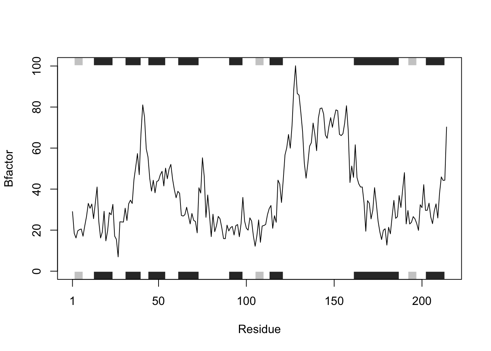
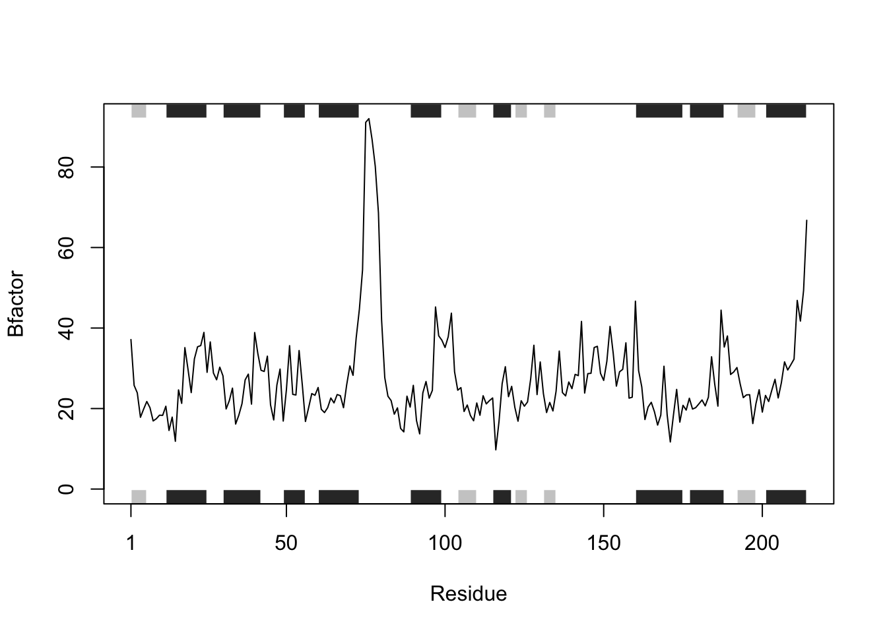

#install.packages("bio3d")
library(bio3d)Class 6 Homework
Analysis of Protein Drug Interactions
Set-Up
Q1. What type of object is returned from the read.pdb() function?
A list of 8 with data frames, characters, integers, numerics, and logicals is returned from the read.pdb() function. The data is a PDB coordinate file, which includes information on atoms in a molecular structure and their respective information (e.g., what the atoms are) and coordinates.
#Reading in data
s1 <- read.pdb("4AKE") # kinase with drug Note: Accessing on-line PDB files2 <- read.pdb("1AKE") # kinase no drug Note: Accessing on-line PDB file
PDB has ALT records, taking A only, rm.alt=TRUEs3 <- read.pdb("1E4Y") # kinase with drug Note: Accessing on-line PDB file#Looking at data structure
str(s1)List of 8
$ atom :'data.frame': 3459 obs. of 16 variables:
..$ type : chr [1:3459] "ATOM" "ATOM" "ATOM" "ATOM" ...
..$ eleno : int [1:3459] 1 2 3 4 5 6 7 8 9 10 ...
..$ elety : chr [1:3459] "N" "CA" "C" "O" ...
..$ alt : chr [1:3459] NA NA NA NA ...
..$ resid : chr [1:3459] "MET" "MET" "MET" "MET" ...
..$ chain : chr [1:3459] "A" "A" "A" "A" ...
..$ resno : int [1:3459] 1 1 1 1 1 1 1 1 2 2 ...
..$ insert: chr [1:3459] NA NA NA NA ...
..$ x : num [1:3459] -10.93 -9.9 -9.17 -9.8 -10.59 ...
..$ y : num [1:3459] -24.9 -24.4 -23.3 -22.3 -24 ...
..$ z : num [1:3459] -9.52 -10.48 -9.81 -9.35 -11.77 ...
..$ o : num [1:3459] 1 1 1 1 1 1 1 1 1 1 ...
..$ b : num [1:3459] 41.5 29 27.9 26.4 34.2 ...
..$ segid : chr [1:3459] NA NA NA NA ...
..$ elesy : chr [1:3459] "N" "C" "C" "O" ...
..$ charge: chr [1:3459] NA NA NA NA ...
$ xyz : 'xyz' num [1, 1:10377] -10.93 -24.89 -9.52 -9.9 -24.42 ...
$ seqres: Named chr [1:428] "MET" "ARG" "ILE" "ILE" ...
..- attr(*, "names")= chr [1:428] "A" "A" "A" "A" ...
$ helix :List of 4
..$ start: Named num [1:19] 13 31 44 61 75 90 113 161 202 13 ...
.. ..- attr(*, "names")= chr [1:19] "" "" "" "" ...
..$ end : Named num [1:19] 24 40 54 73 77 98 121 187 213 24 ...
.. ..- attr(*, "names")= chr [1:19] "" "" "" "" ...
..$ chain: chr [1:19] "A" "A" "A" "A" ...
..$ type : chr [1:19] "5" "1" "1" "1" ...
$ sheet :List of 4
..$ start: Named num [1:14] 192 105 2 81 27 123 131 192 105 2 ...
.. ..- attr(*, "names")= chr [1:14] "" "" "" "" ...
..$ end : Named num [1:14] 197 110 7 84 29 126 134 197 110 7 ...
.. ..- attr(*, "names")= chr [1:14] "" "" "" "" ...
..$ chain: chr [1:14] "A" "A" "A" "A" ...
..$ sense: chr [1:14] "0" "1" "1" "1" ...
$ calpha: logi [1:3459] FALSE TRUE FALSE FALSE FALSE FALSE ...
$ remark:List of 1
..$ biomat:List of 4
.. ..$ num : int 1
.. ..$ chain :List of 1
.. .. ..$ : chr [1:2] "A" "B"
.. ..$ mat :List of 1
.. .. ..$ :List of 1
.. .. .. ..$ A B: num [1:3, 1:4] 1 0 0 0 1 0 0 0 1 0 ...
.. ..$ method: chr "AUTHOR"
$ call : language read.pdb(file = "4AKE")
- attr(*, "class")= chr [1:2] "pdb" "sse"str(s2)List of 8
$ atom :'data.frame': 3804 obs. of 16 variables:
..$ type : chr [1:3804] "ATOM" "ATOM" "ATOM" "ATOM" ...
..$ eleno : int [1:3804] 1 2 3 4 5 6 7 8 9 10 ...
..$ elety : chr [1:3804] "N" "CA" "C" "O" ...
..$ alt : chr [1:3804] NA NA NA NA ...
..$ resid : chr [1:3804] "MET" "MET" "MET" "MET" ...
..$ chain : chr [1:3804] "A" "A" "A" "A" ...
..$ resno : int [1:3804] 1 1 1 1 1 1 1 1 2 2 ...
..$ insert: chr [1:3804] NA NA NA NA ...
..$ x : num [1:3804] 27 26.1 26.7 27 24.7 ...
..$ y : num [1:3804] 54 52.8 52.2 52.9 53.3 ...
..$ z : num [1:3804] 40.1 39.9 38.7 37.7 39.6 ...
..$ o : num [1:3804] 1 1 1 1 1 1 1 1 1 1 ...
..$ b : num [1:3804] 40.8 37.1 30.1 27.6 38.1 ...
..$ segid : chr [1:3804] NA NA NA NA ...
..$ elesy : chr [1:3804] "N" "C" "C" "O" ...
..$ charge: chr [1:3804] NA NA NA NA ...
$ xyz : 'xyz' num [1, 1:11412] 27 54 40.1 26.1 52.8 ...
$ seqres: Named chr [1:428] "MET" "ARG" "ILE" "ILE" ...
..- attr(*, "names")= chr [1:428] "A" "A" "A" "A" ...
$ helix :List of 4
..$ start: Named num [1:18] 12 30 49 60 89 115 160 177 201 12 ...
.. ..- attr(*, "names")= chr [1:18] "" "" "" "" ...
..$ end : Named num [1:18] 25 42 56 73 99 121 175 188 214 25 ...
.. ..- attr(*, "names")= chr [1:18] "" "" "" "" ...
..$ chain: chr [1:18] "A" "A" "A" "A" ...
..$ type : chr [1:18] "1" "1" "1" "1" ...
$ sheet :List of 4
..$ start: Named num [1:18] 27 81 1 104 192 131 122 151 144 27 ...
.. ..- attr(*, "names")= chr [1:18] "" "" "" "" ...
..$ end : Named num [1:18] 29 84 6 110 198 135 126 154 146 29 ...
.. ..- attr(*, "names")= chr [1:18] "" "" "" "" ...
..$ chain: chr [1:18] "A" "A" "A" "A" ...
..$ sense: chr [1:18] "0" "1" "1" "1" ...
$ calpha: logi [1:3804] FALSE TRUE FALSE FALSE FALSE FALSE ...
$ remark:List of 1
..$ biomat:List of 4
.. ..$ num : int 2
.. ..$ chain :List of 2
.. .. ..$ : chr "A"
.. .. ..$ : chr "B"
.. ..$ mat :List of 2
.. .. ..$ :List of 1
.. .. .. ..$ A: num [1:3, 1:4] 1 0 0 0 1 0 0 0 1 0 ...
.. .. ..$ :List of 1
.. .. .. ..$ B: num [1:3, 1:4] 1 0 0 0 1 0 0 0 1 0 ...
.. ..$ method: chr [1:2] "AUTHOR" "AUTHOR"
$ call : language read.pdb(file = "1AKE")
- attr(*, "class")= chr [1:2] "pdb" "sse"str(s3)List of 8
$ atom :'data.frame': 3428 obs. of 16 variables:
..$ type : chr [1:3428] "ATOM" "ATOM" "ATOM" "ATOM" ...
..$ eleno : int [1:3428] 1 2 3 4 5 6 7 8 9 10 ...
..$ elety : chr [1:3428] "N" "CA" "C" "O" ...
..$ alt : chr [1:3428] NA NA NA NA ...
..$ resid : chr [1:3428] "MET" "MET" "MET" "MET" ...
..$ chain : chr [1:3428] "A" "A" "A" "A" ...
..$ resno : int [1:3428] 1 1 1 1 1 1 1 1 2 2 ...
..$ insert: chr [1:3428] NA NA NA NA ...
..$ x : num [1:3428] 18.9 18.8 17.6 16.7 18.7 ...
..$ y : num [1:3428] -5.38 -4.15 -3.41 -4.12 -4.49 ...
..$ z : num [1:3428] 8.25 7.48 7.92 8.4 6.02 ...
..$ o : num [1:3428] 1 1 1 1 1 1 1 1 1 1 ...
..$ b : num [1:3428] 24.2 25.5 23.1 22.1 26.9 ...
..$ segid : chr [1:3428] NA NA NA NA ...
..$ elesy : chr [1:3428] "N" "C" "C" "O" ...
..$ charge: chr [1:3428] NA NA NA NA ...
$ xyz : 'xyz' num [1, 1:10284] 18.9 -5.38 8.25 18.81 -4.15 ...
$ seqres: Named chr [1:428] "MET" "ARG" "ILE" "ILE" ...
..- attr(*, "names")= chr [1:428] "A" "A" "A" "A" ...
$ helix :List of 4
..$ start: Named num [1:22] 12 31 43 60 76 89 114 156 160 176 ...
.. ..- attr(*, "names")= chr [1:22] "" "" "" "" ...
..$ end : Named num [1:22] 24 40 55 73 80 100 122 159 175 188 ...
.. ..- attr(*, "names")= chr [1:22] "" "" "" "" ...
..$ chain: chr [1:22] "A" "A" "A" "A" ...
..$ type : chr [1:22] "1" "1" "1" "1" ...
$ sheet :List of 4
..$ start: Named num [1:14] 28 81 2 105 193 123 131 28 81 2 ...
.. ..- attr(*, "names")= chr [1:14] "" "" "" "" ...
..$ end : Named num [1:14] 30 84 7 110 197 126 134 30 84 7 ...
.. ..- attr(*, "names")= chr [1:14] "" "" "" "" ...
..$ chain: chr [1:14] "A" "A" "A" "A" ...
..$ sense: chr [1:14] "0" "1" "1" "1" ...
$ calpha: logi [1:3428] FALSE TRUE FALSE FALSE FALSE FALSE ...
$ remark:List of 1
..$ biomat:List of 4
.. ..$ num : int 2
.. ..$ chain :List of 2
.. .. ..$ : chr "A"
.. .. ..$ : chr "B"
.. ..$ mat :List of 2
.. .. ..$ :List of 1
.. .. .. ..$ A: num [1:3, 1:4] 1 0 0 0 1 0 0 0 1 0 ...
.. .. ..$ :List of 1
.. .. .. ..$ B: num [1:3, 1:4] 1 0 0 0 1 0 0 0 1 0 ...
.. ..$ method: chr [1:2] "AUTHOR" "AUTHOR"
$ call : language read.pdb(file = "1E4Y")
- attr(*, "class")= chr [1:2] "pdb" "sse"Q2. What does the trim.pdb() function do?
The trim.pdb() function creates a smaller PDB object containing a subset of atoms from a larger PDB object.
#Checking `trim.pdb()` function
?trim.pdb
#Calling `trim.pdb()` function
s1.chainA <- trim.pdb(s1, chain="A", elety="CA")
s2.chainA <- trim.pdb(s2, chain="A", elety="CA")
s3.chainA <- trim.pdb(s3, chain="A", elety="CA")
#Looking at data
str(s1.chainA)List of 7
$ atom :'data.frame': 214 obs. of 16 variables:
..$ type : chr [1:214] "ATOM" "ATOM" "ATOM" "ATOM" ...
..$ eleno : int [1:214] 2 10 21 29 37 45 53 57 62 69 ...
..$ elety : chr [1:214] "CA" "CA" "CA" "CA" ...
..$ alt : chr [1:214] NA NA NA NA ...
..$ resid : chr [1:214] "MET" "ARG" "ILE" "ILE" ...
..$ chain : chr [1:214] "A" "A" "A" "A" ...
..$ resno : int [1:214] 1 2 3 4 5 6 7 8 9 10 ...
..$ insert: chr [1:214] NA NA NA NA ...
..$ x : num [1:214] -9.9 -7.03 -5.23 -2.48 -2.56 ...
..$ y : num [1:214] -24.4 -22.4 -20.1 -17.5 -15 ...
..$ z : num [1:214] -10.48 -9.05 -11.46 -11.03 -13.96 ...
..$ o : num [1:214] 1 1 1 1 1 1 1 1 1 1 ...
..$ b : num [1:214] 29 18.4 16.2 19.7 20.3 ...
..$ segid : chr [1:214] NA NA NA NA ...
..$ elesy : chr [1:214] "C" "C" "C" "C" ...
..$ charge: chr [1:214] NA NA NA NA ...
$ helix :List of 4
..$ start: Named num [1:9] 13 31 44 61 75 90 113 161 202
.. ..- attr(*, "names")= chr [1:9] "" "" "" "" ...
..$ end : Named num [1:9] 24 40 54 73 77 98 121 187 213
.. ..- attr(*, "names")= chr [1:9] "" "" "" "" ...
..$ chain: chr [1:9] "A" "A" "A" "A" ...
..$ type : chr [1:9] "5" "1" "1" "1" ...
$ sheet :List of 4
..$ start: Named num [1:7] 192 105 2 81 27 123 131
.. ..- attr(*, "names")= chr [1:7] "" "" "" "" ...
..$ end : Named num [1:7] 197 110 7 84 29 126 134
.. ..- attr(*, "names")= chr [1:7] "" "" "" "" ...
..$ chain: chr [1:7] "A" "A" "A" "A" ...
..$ sense: chr [1:7] "0" "1" "1" "1" ...
$ seqres: Named chr [1:428] "MET" "ARG" "ILE" "ILE" ...
..- attr(*, "names")= chr [1:428] "A" "A" "A" "A" ...
$ xyz : 'xyz' num [1, 1:642] -9.9 -24.42 -10.48 -7.03 -22.35 ...
$ calpha: logi [1:214] TRUE TRUE TRUE TRUE TRUE TRUE ...
$ call : language trim.pdb(pdb = s1, chain = "A", elety = "CA")
- attr(*, "class")= chr [1:2] "pdb" "sse"str(s2.chainA)List of 7
$ atom :'data.frame': 214 obs. of 16 variables:
..$ type : chr [1:214] "ATOM" "ATOM" "ATOM" "ATOM" ...
..$ eleno : int [1:214] 2 10 21 29 37 45 53 57 62 69 ...
..$ elety : chr [1:214] "CA" "CA" "CA" "CA" ...
..$ alt : chr [1:214] NA NA NA NA ...
..$ resid : chr [1:214] "MET" "ARG" "ILE" "ILE" ...
..$ chain : chr [1:214] "A" "A" "A" "A" ...
..$ resno : int [1:214] 1 2 3 4 5 6 7 8 9 10 ...
..$ insert: chr [1:214] NA NA NA NA ...
..$ x : num [1:214] 26.1 27.4 25 25.2 22.4 ...
..$ y : num [1:214] 52.8 50 48 44.9 44.5 ...
..$ z : num [1:214] 39.9 37.8 35.7 33.4 30.7 ...
..$ o : num [1:214] 1 1 1 1 1 1 1 1 1 1 ...
..$ b : num [1:214] 37.1 25.8 23.9 17.8 19.9 ...
..$ segid : chr [1:214] NA NA NA NA ...
..$ elesy : chr [1:214] "C" "C" "C" "C" ...
..$ charge: chr [1:214] NA NA NA NA ...
$ helix :List of 4
..$ start: Named num [1:9] 12 30 49 60 89 115 160 177 201
.. ..- attr(*, "names")= chr [1:9] "" "" "" "" ...
..$ end : Named num [1:9] 25 42 56 73 99 121 175 188 214
.. ..- attr(*, "names")= chr [1:9] "" "" "" "" ...
..$ chain: chr [1:9] "A" "A" "A" "A" ...
..$ type : chr [1:9] "1" "1" "1" "1" ...
$ sheet :List of 4
..$ start: Named num [1:9] 27 81 1 104 192 131 122 151 144
.. ..- attr(*, "names")= chr [1:9] "" "" "" "" ...
..$ end : Named num [1:9] 29 84 6 110 198 135 126 154 146
.. ..- attr(*, "names")= chr [1:9] "" "" "" "" ...
..$ chain: chr [1:9] "A" "A" "A" "A" ...
..$ sense: chr [1:9] "0" "1" "1" "1" ...
$ seqres: Named chr [1:428] "MET" "ARG" "ILE" "ILE" ...
..- attr(*, "names")= chr [1:428] "A" "A" "A" "A" ...
$ xyz : 'xyz' num [1, 1:642] 26.1 52.8 39.9 27.4 50 ...
$ calpha: logi [1:214] TRUE TRUE TRUE TRUE TRUE TRUE ...
$ call : language trim.pdb(pdb = s2, chain = "A", elety = "CA")
- attr(*, "class")= chr [1:2] "pdb" "sse"str(s3.chainA)List of 7
$ atom :'data.frame': 214 obs. of 16 variables:
..$ type : chr [1:214] "ATOM" "ATOM" "ATOM" "ATOM" ...
..$ eleno : int [1:214] 2 10 21 29 37 45 53 57 62 70 ...
..$ elety : chr [1:214] "CA" "CA" "CA" "CA" ...
..$ alt : chr [1:214] NA NA NA NA ...
..$ resid : chr [1:214] "MET" "ARG" "ILE" "ILE" ...
..$ chain : chr [1:214] "A" "A" "A" "A" ...
..$ resno : int [1:214] 1 2 3 4 5 6 7 8 9 10 ...
..$ insert: chr [1:214] NA NA NA NA ...
..$ x : num [1:214] 18.81 16.13 13.8 10.82 8.18 ...
..$ y : num [1:214] -4.15 -1.45 -0.01 2.38 1.95 ...
..$ z : num [1:214] 7.48 8.25 5.61 5.75 3 ...
..$ o : num [1:214] 1 1 1 1 1 1 1 1 1 1 ...
..$ b : num [1:214] 25.46 17.86 10.28 4.73 4.36 ...
..$ segid : chr [1:214] NA NA NA NA ...
..$ elesy : chr [1:214] "C" "C" "C" "C" ...
..$ charge: chr [1:214] NA NA NA NA ...
$ helix :List of 4
..$ start: Named num [1:11] 12 31 43 60 76 89 114 156 160 176 ...
.. ..- attr(*, "names")= chr [1:11] "" "" "" "" ...
..$ end : Named num [1:11] 24 40 55 73 80 100 122 159 175 188 ...
.. ..- attr(*, "names")= chr [1:11] "" "" "" "" ...
..$ chain: chr [1:11] "A" "A" "A" "A" ...
..$ type : chr [1:11] "1" "1" "1" "1" ...
$ sheet :List of 4
..$ start: Named num [1:7] 28 81 2 105 193 123 131
.. ..- attr(*, "names")= chr [1:7] "" "" "" "" ...
..$ end : Named num [1:7] 30 84 7 110 197 126 134
.. ..- attr(*, "names")= chr [1:7] "" "" "" "" ...
..$ chain: chr [1:7] "A" "A" "A" "A" ...
..$ sense: chr [1:7] "0" "1" "1" "1" ...
$ seqres: Named chr [1:428] "MET" "ARG" "ILE" "ILE" ...
..- attr(*, "names")= chr [1:428] "A" "A" "A" "A" ...
$ xyz : 'xyz' num [1, 1:642] 18.81 -4.15 7.48 16.13 -1.45 ...
$ calpha: logi [1:214] TRUE TRUE TRUE TRUE TRUE TRUE ...
$ call : language trim.pdb(pdb = s3, chain = "A", elety = "CA")
- attr(*, "class")= chr [1:2] "pdb" "sse"s1.b <- s1.chainA$atom$b
s2.b <- s2.chainA$atom$b
s3.b <- s3.chainA$atom$bQ3. What input parameter would turn off the marginal black and grey rectangles in the plots and what do they represent in this case?
Setting the top and bot parameters to FALSE would turn off the rectangles. The black rectangles represent the locations of alpha helices, and the grey rectangles represent the locations of beta sheets, along the protein sequence.
#Plotting data
plotb3(s1.b, sse=s1.chainA, typ="l", ylab="Bfactor")
plotb3(s2.b, sse=s2.chainA, typ="l", ylab="Bfactor")
plotb3(s3.b, sse=s3.chainA, typ="l", ylab="Bfactor")
#Turning off marginal rectangles
#First, check arguments for function `plotb3()`
?plotb3
#`top` and `bot` appear to be what controls the rectangles
#Therefore, to turn off, change arguments to F
plotb3(s1.b, sse=s1.chainA, typ="l", ylab="Bfactor", top=FALSE, bot=FALSE)
plotb3(s2.b, sse=s2.chainA, typ="l", ylab="Bfactor", top=FALSE, bot=FALSE)
plotb3(s3.b, sse=s3.chainA, typ="l", ylab="Bfactor", top=FALSE, bot=FALSE)#According to the help page, there are arguments that can control
#the colors of the alpha helices and beta sheets
#For example:
plotb3(s1.b, sse=s1.chainA, typ="l", ylab="Bfactor")
plotb3(s1.b, sse=s1.chainA, typ="l", ylab="Bfactor",
helix.col="red", sheet.col="blue")#Therefore, the rectangles represent where the alpha helices and beta sheets
#are located along the protein sequenceQ4. What would be a better plot to compare across the different proteins?
A better plot would perhaps be a plot overlaid with data from each of the proteins so that it is easier to visually compare. Or, in the next question, using a cluster dendrogram would be a more quantitative (rather than qualitative) way of comparing the B-factor trends.
Q5. Which proteins are more similar to each other in their B-factor trends. How could you quantify this?
Proteins s2 and s3 are more similar to each other in their B-factor trends. Using dist(), we can quantify the distance of s1, s2, and s3 B-factor trends from one another.
#Plotting dendrogram, where
#`rbind()` combines data from s1.b, s2.b, and s3.b
#`dist()` calculates the distance between the entries of the data matrix
#`hclust()` performs a hierarchical cluster analysis
hc <- hclust( dist( rbind(s1.b, s2.b, s3.b) ) )
plot(hc)
Creating Function
#Here is the analysis code again
#Data is read in from the PDB database
s1 <- read.pdb("4AKE") # kinase with drug Note: Accessing on-line PDB fileWarning in get.pdb(file, path = tempdir(), verbose = FALSE): /var/folders/
d2/89w3p8556q34tghk_dhy2nn40000gn/T//RtmpyLGf7c/4AKE.pdb exists. Skipping
downloads2 <- read.pdb("1AKE") # kinase no drug Note: Accessing on-line PDB fileWarning in get.pdb(file, path = tempdir(), verbose = FALSE): /var/folders/
d2/89w3p8556q34tghk_dhy2nn40000gn/T//RtmpyLGf7c/1AKE.pdb exists. Skipping
download PDB has ALT records, taking A only, rm.alt=TRUEs3 <- read.pdb("1E4Y") # kinase with drug Note: Accessing on-line PDB fileWarning in get.pdb(file, path = tempdir(), verbose = FALSE): /var/folders/
d2/89w3p8556q34tghk_dhy2nn40000gn/T//RtmpyLGf7c/1E4Y.pdb exists. Skipping
download#(1) Pulling out data for Chain A
s1.chainA <- trim.pdb(s1, chain="A", elety="CA")
s2.chainA <- trim.pdb(s2, chain="A", elety="CA")
s3.chainA <- trim.pdb(s3, chain="A", elety="CA")
#(2) Pulling out the B-factors for Chain A
s1.b <- s1.chainA$atom$b
s2.b <- s2.chainA$atom$b
s3.b <- s3.chainA$atom$b
#(3) Plotting residues by B-factor
plotb3(s1.b, sse=s1.chainA, typ="l", ylab="Bfactor")
plotb3(s2.b, sse=s2.chainA, typ="l", ylab="Bfactor")
plotb3(s3.b, sse=s3.chainA, typ="l", ylab="Bfactor")
Simplifying code for Step (1)
#Where `x` represents the input data
#s1 as example
x <- s1
x.chainA <- trim.pdb(x, chain="A", elety="CA")Simplifying code for Step (2)
#Where `x` represents the input data
x.b <- x.chainA$atom$bSimplifying code for Step (3)
#Where `x` represents the input data
plotb3(x.b, sse=x.chainA, typ="l", ylab="Bfactor")
Putting it all together
#Using Code > Extract Function to write into function
bfactorplot <- function(x) {
x.chainA <- trim.pdb(x, chain="A", elety="CA")
x.b <- x.chainA$atom$b
plotb3(x.b, sse=x.chainA, typ="l", ylab="Bfactor")
}
#Where...
#Input to function `x` is the downloaded PDB dataset
#Function extracts B-factor information from Chain A of the PDB data and
#plots it against the residues of Chain ATo use the function, simply plug in the dataset into the x in bfactorplot(x)
#Example for s2
bfactorplot(s2)
#Output is the same as if we did each of the steps on their own
s2.chainA <- trim.pdb(s2, chain="A", elety="CA")
s2.b <- s2.chainA$atom$b
plotb3(s2.b, sse=s2.chainA, typ="l", ylab="Bfactor")
#Testing it on s1 and s3
bfactorplot(s1)
bfactorplot(s3)